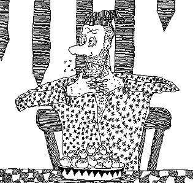

Monday, April the 5th, 2004
back to: title, date or indexes

Here, to brighten your day, is a picture of an imperilled noodlehead. The source of his peril was lurking in one of the custard-balls piled in his bowl. Due to monstrous kitchen slapdashery, a gewgaw was inadvertently baked into one of the balls. The gewgaw, a tiny metal cameo brooch depicting Gordon Sumner, is now stuck in the noodlehead's throat, and he is choking. Let us hope that he manages to spit it out.
Gordon Sumner is one of that select band of middle-aged popular singers who still calls himself by a nickname he adopted as a considerably younger man. In his case, that name is Sting, or possibly Stig. Doesn't this embarrass him? Does he occasionally wake screaming in the night and phone Paul Hewson, or Bono as he is absurdly known, so that they can compare notes on their irretrievable loss of dignity?